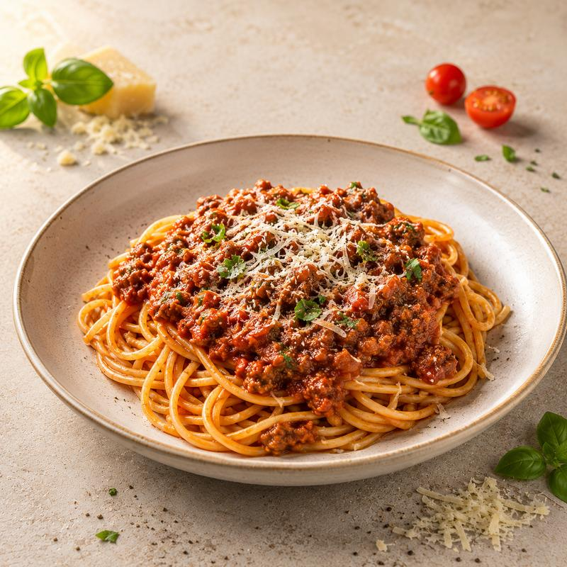

Home
Spaghetti Bolognese

Ingredients
paghetti Bolognese is a popular pasta dish made with spaghetti and a rich meat and tomato sauce.
- Spaghetti
- Ground beef
- Tomato sauce
- Onion
- Garlic
Steps
- Boil the spaghetti according to the package instructions.
- Heat olive oil in a pan and cook the chopped onion and garlic.
- Add the minced beef and cook until browned.
- Add the chopped tomatoes, salt, and pepper. Simmer for 15–20 minutes.
- Serve the sauce over the cooked spaghetti.